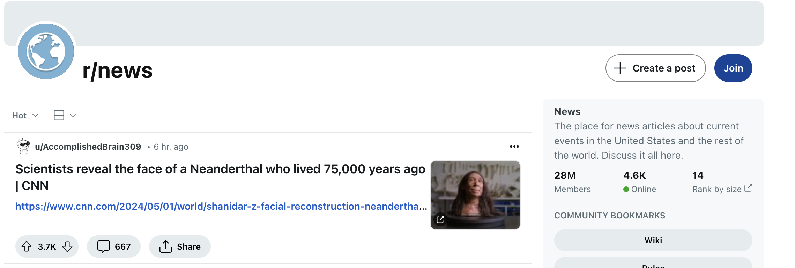

Introduction
Background
In the past four years, it seems like misinformation claims have skyrocketed in the United States. With major events like national elections and the COVID-19 pandemic, it seems like people have become increasingly susceptible to false narratives and misinformation. This trend poses significant challenges to public discourse and individual decision-making, making it imperative to study and understand the mechanisms and impacts of misinformation. Our project focuses on analyzing misinformation claims on Reddit, one of the largest and most influential social media platforms. By concentrating our analysis on the “news” and “worldnews” subreddits from 2021 to 2023, we aim to uncover patterns and trends that characterize the spread and reception of misinformation during this period.
Figure 1.1: News Sub-Reddit
Figure 1.2: World News Sub-Reddit
Submissions in r/worldnews and r/news typically include the article’s title along with a link, encouraging users to review the source material before returning to Reddit to discuss the news story. This format fosters an environment where diverse viewpoints and insights can be shared, thereby enriching the discussion and enhancing user engagement. The interactive nature of these subreddits not only serves as a platform for news dissemination but also as a forum for vibrant community interactions, making them ideal for observing trends in information sharing and misinformation.
To enrich our analysis, we incorporated additional data from the Google COVID-19 Vaccination Data. TWe use its epidemic data including vaccine data, confirmed cases, and more to draw correlations between real-world events and trends in online conversations. This integration allows us to create a comprehensive timeline that aligns significant health events with spikes in user activity and sentiment. By juxtaposing these datasets, we aim to understand better how global events influence public opinion and information dissemination on digital platforms.
Figure 1.3: Monthly Log Frequecy of Comments in News and World News Sub-reddits from 2021 - 2023
Figure 1.4: Monthly Log Frequecy of Posts in News and World News Sub-reddits from 2021 - 2023
Furthermore, this cross-referenced data approach provides a unique perspective on the direct and indirect effects of global crises on digital media consumption and user behavior. Our goal is to use this analysis to identify patterns that could help predict and mitigate the spread of misinformation in future scenarios, thereby contributing to more informed and resilient online communities.
This project was executed using Amazon Web Services (AWS) with Spark to manage the data efficiently. Our analytical approach involved a blend of models, notably using pretrained models from JohnSnowLabs and custom models developed using VaderSentiment analysis. All project code and documentation are accessible via the GitHub link provided on the banner at the bottom of each page.
By delving deep into the dynamics of subreddit discussions and utilizing advanced data-processing capabilities, we endeavor to pave the way for more sophisticated methods of identifying and combating misinformation. This research not only sheds light on the patterns of news consumption but also offers a blueprint for enhancing the efficacy of digital platforms as tools for truthful communication.